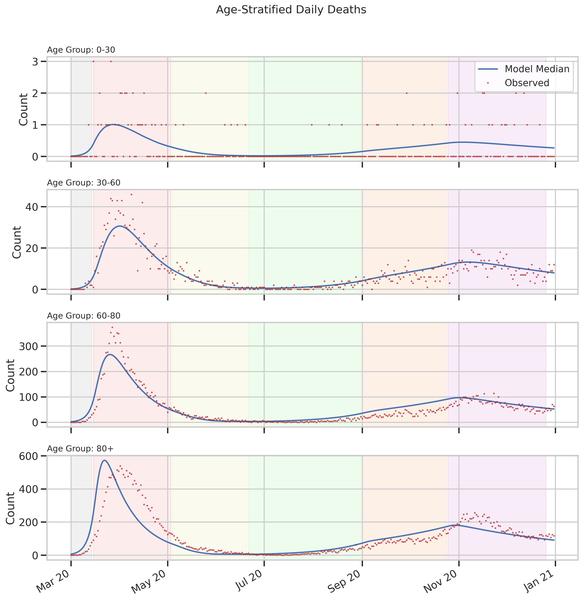
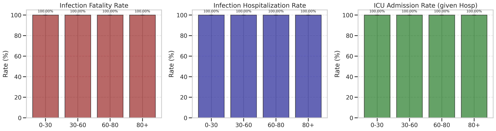

Hospitalizations by Age

Deaths by Age

Severity Rates (IFR/IHR)
Generated: 2025-12-29 21:45:51
Daily Hospitalizations
Daily Deaths
Breakdown of dynamics by age group to identify high-risk populations.
Hospitalizations by Age
Deaths by Age
Severity Rates (IFR/IHR)

Effective Reproduction Number
Seroprevalence

Parameter Posteriors
Relative Impact
Absolute Comparison